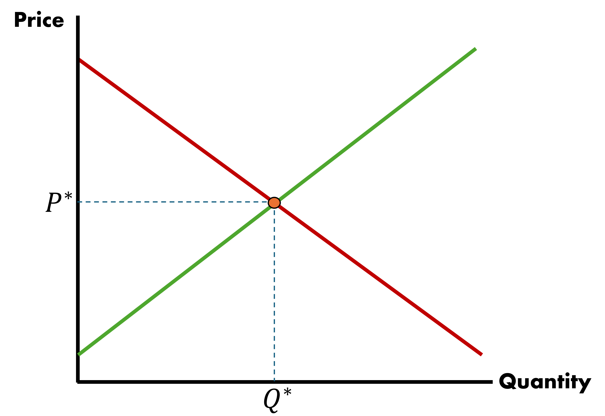
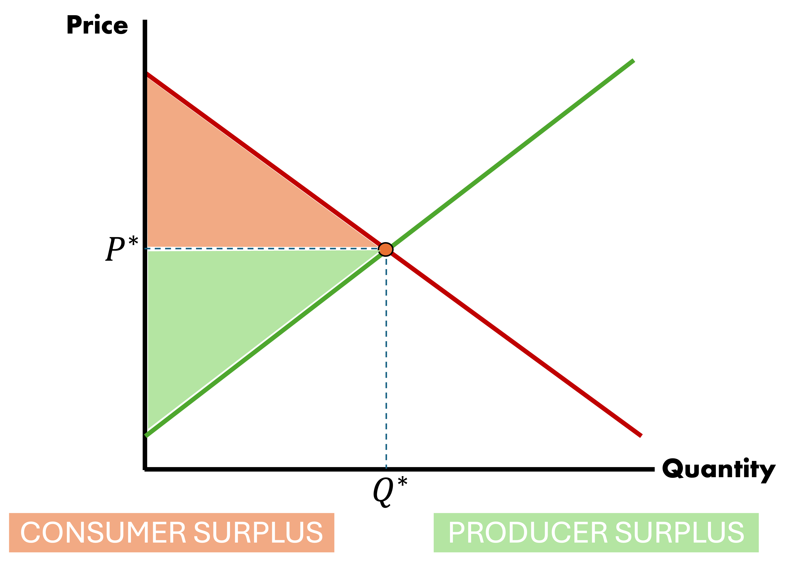
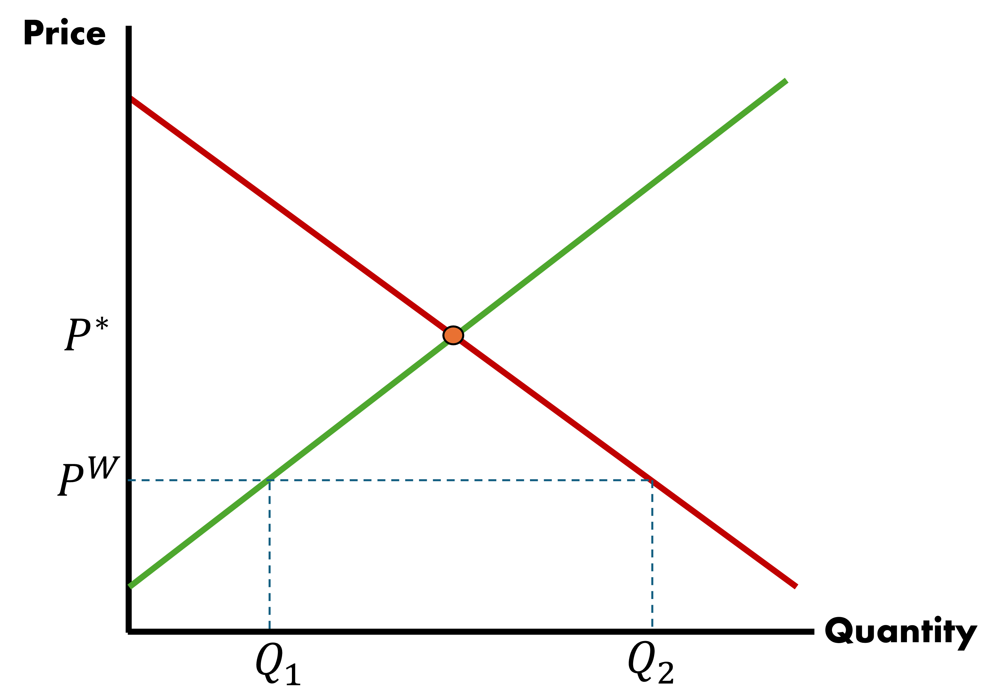
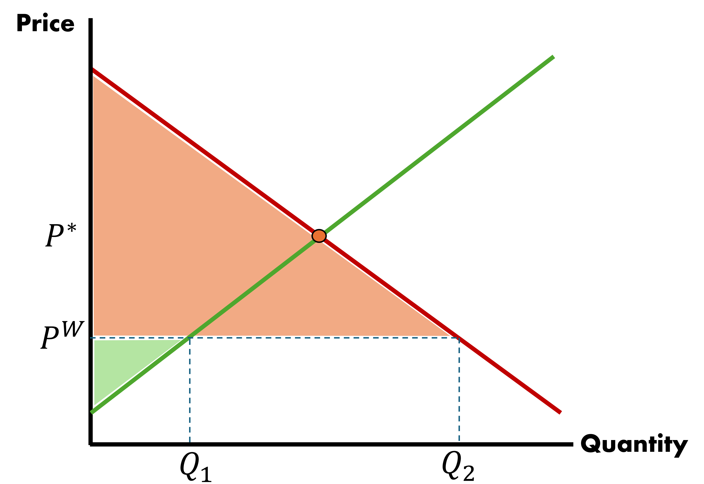
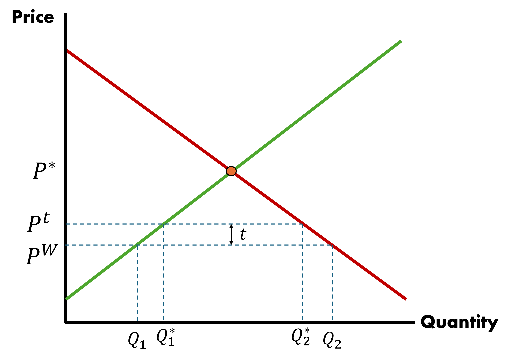
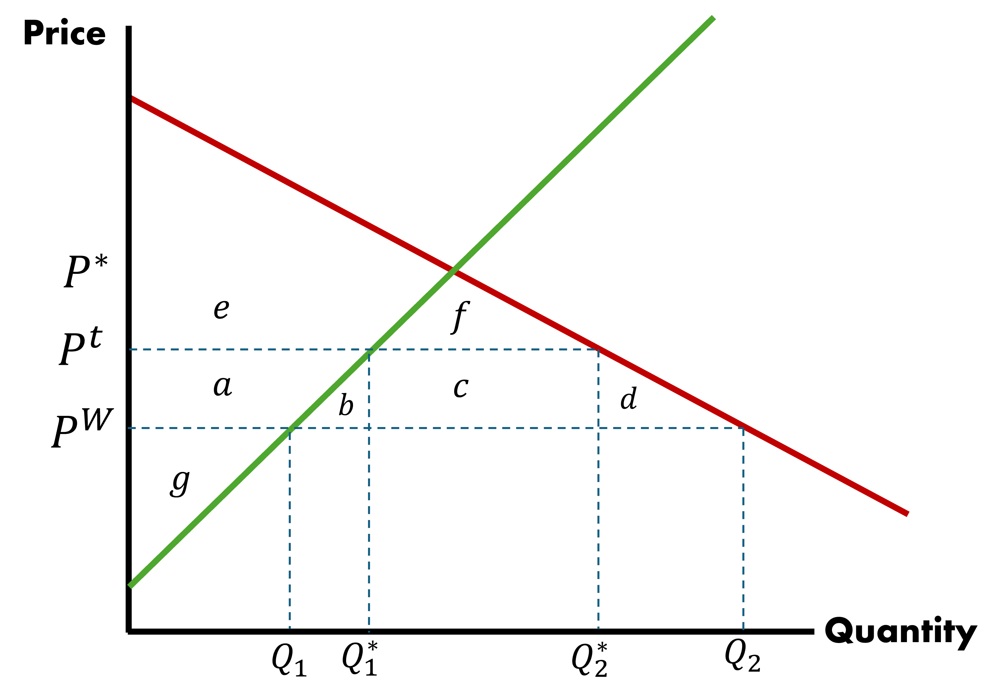
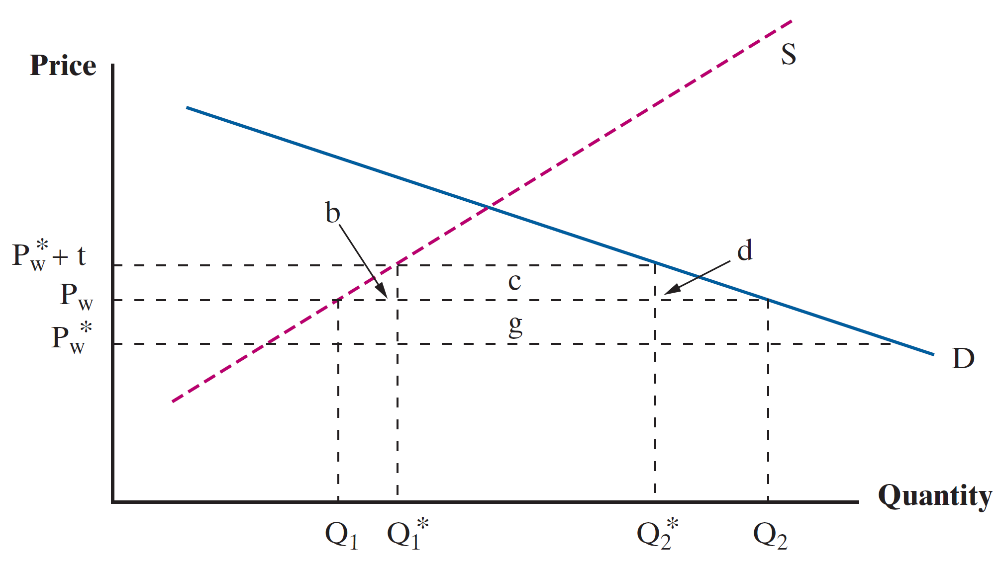

Tariff Analysis
So far we have examined transitions from autarky into free trade
In practice, even the most seemingly open economies will have some kind of measures in place that regulate the manner in which goods are traded internationally
Take something that seems like a good cause: quality control
Restrictions introduce quality control over goods entering the country but have the added effects of limiting volume of trade that would otherwise occur
Why?
Trade policy, like any other form of interverntion, introduces costs for firms, which get passed on to consumers. Some consumers will switch to domestic goods
Tariff Analysis
To understand how tariffs may affect outcomes, we have to understand the components and start from the beginning
- Consumer Demand Curve
- Producer Supply Curve
- Consumer and Producer Surplus
Consumer Demand Curve
- Demand is mapped by the marginal wilingness of individuals to pay for a good at a given price
- At a particularly high price, only a small number of individuals would purchase
- As price falls, the good enters into a greater pool of individuals’ marginal willingness to pay, leading to quantity demanded rising
Therefore, we assume a negative relationship between market price and quantity demanded
Producer Supply Curve
- When the market price is particularly low, only a small number of firms can afford to service the market
- As prices rise, the quantity supplied to the market increases, given that the greater associated revenue makes business profitable for an increasing number of firms
Therefore, we assume a positive relationship between market price and quantity supplied
Consumer and Producer Surplus
When we combine these two strands of intuition we arrive at:
- Demand curve for a given good is downward sloping
- Supply curve for a given good is upward sloping
As per standard economic theory, the market will produce where supply meets demand
Any difference between marginal willingness to pay and price represents surplus for the consumer
Any difference between marginal willingness to receive and price represents surplus for the producer
Goods Market Equilibrium

Consumer and Producer Surplus: Graph

Consumer and Producer Surplus: Calculation
In order to quantify welfare, we need to know the size of these areas. Thankfully, we will work with triangles which have a simple formula
To calculate the area of consumer surplus
\[ CS = \dfrac{1}{2} \times [\text{Demand}(q = 0) - p^{*}] \times q_{d}^{*} \]
To calculate the area of producer surplus
\[ PS = \dfrac{1}{2} \times [p^{*} - \text{Supply}(q = 0) ] \times q_{s}^{*} \]
Where \(p^{*}\) and \(q^{*}\) are simply the equilibrium price and quantity, respectively
Consumer and Producer Surplus
These triangles are useful and help us understand the market:
Help us discuss implications of tariffs and quotas
CS and PS are determined by market prices and quantities
The question remains: How do tariffs influence P and Q?
Our demand and supply curves will reflect national production capacities
Equilibrium price is determiend by world price
Introduce World Trade

\[ P^{W} < P^{*} \]
Local supply is at \(Q_{1}\) below market market demand \(Q_{2}\)
Import amount is \[ Q_{2} - Q_{1} \]
Introduce World Trade

- Market experiences a huge increase in CS due to trade
- PS falls, but net welfare rises (CS + PS)
- Assume it is a small country \(\Rightarrow\) the scale of demand cannot affect world price
Imposing a Tariff
A tariff will upset this balance
Let the country’s government impose a tariff in the amount of \(t\), per good imported
Price will update to \(P^{t} = P^{W} + t\), all of the outcome variables we measured are affected
Imposing a Tariff

Consumer Surplus Under Free Trade
CS under free trade, when \(t = 0\): \(a + b + c + d + e + f\)
Consumer Surplus With Tariff

CS under tariff, with tariff \(t > 0\): \(e + f\)
Change in Consumer Surplus
CS under free trade, when \(t = 0\): \(a + b + c + d + e + f\)
CS under tariff, with tariff \(t > 0\): \(e + f\)
What is the Change in CS?
\(\Delta CS = -(a + b + c + d)\)
Producer Surplus Under Free Trade
PS under free trade, when \(t = 0\): \(g\)
Producer Surplus With Tariff
PS under tariff, with tariff \(t > 0\): \(g + a\)
a is transferred from consumers to producers
Government Revenue With Tariff
Government collects revenue \(t \; \times\) the quantity of imports
\[ c = t \times [Q_{2}^{*} - Q_{1}^{*}] \]
\(c\) is transferred form consumers to the Government
Tariff Analysis
Consumers lost \(a + b + c + d\), others gained \(a\) and \(c\)
There is a societal net loss of \(b + d\) where \(d\) is deadweight loss and \(b\) is efficiency loss
Deadweight Loss
Deadweight Loss
Loss associated with the economic welfare consumers that otherwise would have purchased in this market would have generated, had there been no government interference
\[ d = \dfrac{1}{2} \Delta P \times \Delta Q_{2}, \; \text{where } Q_{2} \text{ represents quantity demanded} \]
Efficiency Loss
Efficiency Loss
Loss associated with producing additional goods at an excessive cost, relative to how much it would have cost the rest of the world to generate these goods
\[ b = \dfrac{1}{2} \Delta P \times \Delta Q_{1}, \; \text{where } Q_{1} \text{ represents quantity supplied} \]
Tariff Analysis Caveats
These equilibria we have seen do not take into account:
- Retaliatory tariffs (e.g. China Trade War)
- Innovation and productivity (less competition)
- Import/Export interdependencies within countries
- Rent seeking behavior (lobbying)
Tariff Analysis: Large Country
It is possible to improve national welfare with tariffs as long as there is no retaliation
- Tariff adjustment triggers price reduction by exporter country (Rest of World)
- Fall in Home country demand lowers \(P_{W}\) to \(P_{W}^{*}\). Home price becomes \(P^{*}_{t} = P_{W}^{*} + t\)
- Price reduction offsets some of the deadweight loss caused by tariff introduction
Tariff Analysis: Large Country

A lower price implies that areas \(b\) and \(d\) are smaller. Less domestic production occurs and fewer consumers are squeezed out of the market.
If \(g > b + d\) then the tariff is welfare enhancing